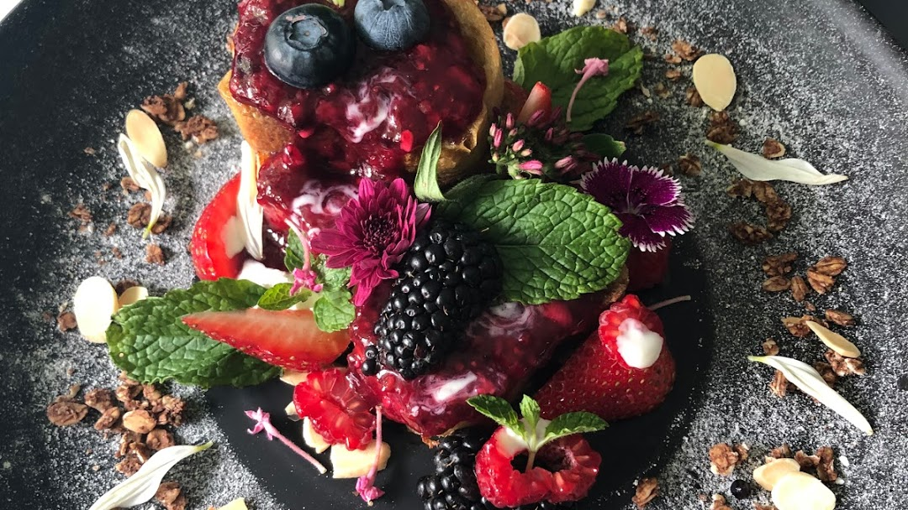
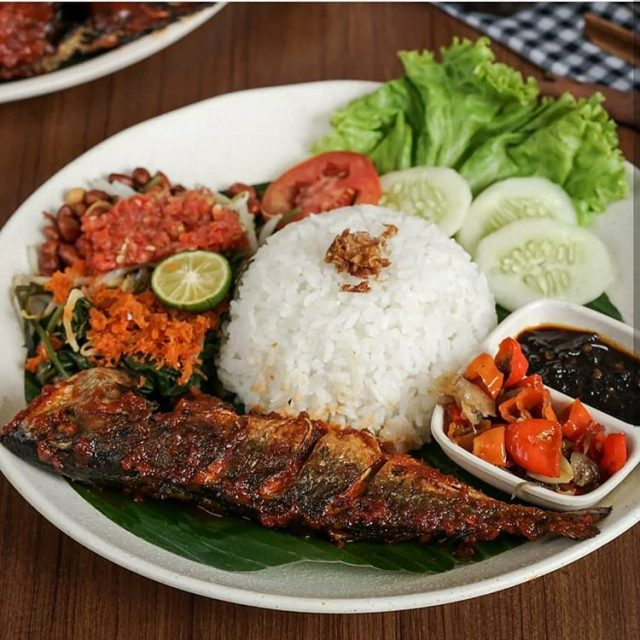

Makanan sekitaran Halte MRT
Stasiun MRT Lebak Bulus
Untuk kamu yang suka makan daging, setelah sampai di Stasiun MRT Lebak Bulus kamu bisa menemukan beberapa tempat makan daging yang enak lho. Inilah beberapa di antaranya:
- Selow the BBQ Artisans – Udah bosan dengan menu BBQ biasa? Cobain BBQ Box kekinian di sini yang disajikan bareng telur dan nasi atau kentang goreng. Walaupun kekinian, daging yang digunakan di sini daging brisket berkualitas lho jadi rasanya pasti enak banget.
- Swiss Cafe – Mau makan makanan Indonesia, Jepang ataupun menu Barat di tempat yang casual dan ada live music? Di cafe yang menjadi bagian Swiss-Bellhotel, dari salmon teriyaki ala Jepang hingga beef emince ala Swiss bisa kamu coba di sini lho.
- Crispy Duck Bebek Garing Lebak Bulus – Bayangkan daging bebek yang crispy dan gurih lalu dibumbui ala Bali dengan bumbu betutu ataupun sambal matah yang pedasnya mantap. Kalau kamu turun di Stasiun MRT Lebak Bulus setelah naik MRT Jakarta, bayangan itu bisa kamu cobain langsung di Crispy Duck Bebek Garing lho.
Stasiun MRT Fatmawati

Kalau kamu tipe orang yang suka up to date dengan makanan kekinian yang lagi hits di Jakarta, ada beberapa tempat yang bisa kamu kunjungi di dekat Stasiun MRT Fatmawati untuk makan nih.
- Eighty Eight Workspace – Di sini, nggak cuma makanan kekinian seperti dory cabe garam atau spaghetti sambal matah yang bisa kamu temukan lho, tapi juga suasana baru untuk kerja yang super nyaman.
- Martabak Raja – Bosan dengan martabak manis biasa? Yuk cobain martabak variasi baru seperti martabak abon manis, martabak cappuccino atau martabak aprikot keju di sini! Kalau kamu suka martabak asin, kamu juga bisa cobain martabak spesial tuna dengan tambah keju mozarella yang meleleh.
- Bambaiya by Queens Tandoor – Di Bambaiya, makanan India yang lagi hits disajikan dengan cara modern banget. Cobain menu seperti Dhabas’ Chicken Tikka, Lamb Charcoal Biryani yang rasanya penuh bumbu-bumbu khas India. Gurih dan segar banget pastinya!
Stasiun MRT Cipete Raya
Dari ngopi hingga makan makanan yang sehat dan bikin kenyang – di dekat Stasiun MRT Cipete Raya ada beberapa cafe dan restoran yang menunya wajib kamu coba.
- The Caffea by Coffeatopology – Penasaran dengan apa bedanya Es Kopi Susu Amat dan Es Susu Kopi Banget? Cobain aja langsung di The Caffea! Tempatnya juga cozy dan terang banget karena bergaya rumah kaca, jadi cocok juga buat kamu yang suka foto-foto instagrammable.
- Bansan – Lapar habis cobain MRT Jakarta dan ingin makan nasi biar kenyang? Langsung aja ke Bansan di dekat Stasiun MRT Cipete Raya di mana kamu bisa cobain rice bowl dengan bumbu yang gurih banget seperti chicken nanban, fire nanban, dan triple sauce roasted beef yang bisa kamu coba.
- Kurakura Eatery – Suka makanan Italia dan ingin cobain rasa Italia yang autentik banget? Di Kurakura Eatery tempatnya! Nggak jauh dari Stasiun MRT Cipete Raya, di sini ada banyak menu khas Italia seperti cacio e pepe, risotto al porcino, hingga dessert khas Italia seperti zabaglione yang bisa kamu coba di sini.
- BNB Terogong – Kalau kamu lagi diet atau ingin makan makanan sehat tapi segar dan enak, segera jalan kaki ke BNB Terogong setelah turun di Stasiun MRT Cipete Raya. Di sini, ada banyak makanan dan minuman sehat seperti smoothies chocoban, dragondilla, almond milk dan cold-pressed juice yang pas banget untuk bikin kamu tambah sehat.
Stasiun MRT Hj Nawi

Untuk para coffee addicts yang selalu butuh kopi enak, ada beberapa cafe dengan menu kopi yang enak di sekitar Stasiun MRT Haji Nawi yang bisa kamu kunjungi supaya segar setelah naik MRT
- Thamir Coffee – Suka ngopi dengan biji kopi asli dari berbagai daerah? Setelah turun di Stasiun MRT Haji Nawi, segera mampir ke cafe satu ini untuk daily caffeine fix kamu. Di sini, ada beberapa menu seperti Es Kopi Today, Espresso Base Coffee, dan Single Origin yang bisa kamu coba.
- Kopi Amat – Ingin minum es kopi susu yang rasanya nggak terlalu manis? Cobain aja es kopi susu ala Kopi Amat. Di sini, semua menu kopi susu dibuat dengan kopi Aceh, Bali, atau Toraja sehingga ada bitter taste yang khas kopi banget dan nggak terlalu manis.
- Kopi Boutique Puri Sakti – Kalau kamu yang justru paling suka es kopi susu yang manis, segera mampir ke cafe satu ini yang dekat Stasiun MRT Haji Nawi dan cobain Susu Kopi Pangeran yang paling favorit. Kopinya segar banget dan ada rasa manisnya sehingga nggak terlalu pahit.
Stasiun MRT Block A

Ingin cobain berbagai jenis makanan? Atau sekedar ngopi dan ngemil aja? Atau lagi diet dan ingin tetap makan makanan sehat habis naik MRT Jakarta? Di sekitar Stasiun MRT Blok A, ada banyak pilihan makanan dan minuman yang menarik untuk kamu coba.
- But First Coffee – Untuk kamu yang suka tempat makan bergaya vintage dan cozy, di sini tempatnya. Kamu bisa cobain berbagai menu kopi seperti espresso, aeropress, cold drip, atau double cortado sambil ngemil cemilan manis seperti Cranberry Pistachio, Sugar Confetti, atau Classic Choco Chunk. Pas banget untuk hangout bareng teman-teman habis naik MRT.
- GB Bistro & Dessert – Dari tea time cantik bareng teman-teman hingga makan kenyang, kamu bisa melakukan semuanya di sini. Ada banyak menu seperti Tenderloin Cordon Bleu dan Mac & Cheese ala GB yang wajib kamu coba. Untuk dessert, cicipi Monster Lava dan rasakan kombinasi milkshake dengan topping chocolate lava cake.
- Ramu – Untuk kamu yang sedang diet atau ingin lebih banyak makan sayur dan buah supaya lebih sehat, mampir ke Ramu di dekat Stasiun MRT Blok A deh. Di sini ada banyak cold-pressed juice dan smoothies yang bisa kamu cobain tanpa bahan buatan. Semua packaging di Ramu juga eco-friendly banget lho jadi kamu bisa mengurangi sampah plastik dengan makan di sini.
- Bros Burgers & Wraps – Suka hot dog dan burger? Segera mampir ke Bros Burgers & Wraps setelah turun dari Stasiun MRT Blok A. Di sini, kamu bisa makan hot dog dan burger super besar dan enak, yaitu Jumbo Hot Dog atau Original 1/3 Pound Burger. Tempatnya juga enak untuk nongkrong bareng teman.
Stasiun MRT Block M

Suka hangout sambil makan-makan bareng teman? Di sekitar Stasiun MRT Blok M, ada banyak tempat yang seru buat jadi tujuan nongkrong kamu setelah naik MRT Jakarta.
- Martabak Boss Pangpol – Ingin coba martabak manis dengan rasa aneh-aneh seperti Nastar, Klepon, atau Durian? Atau martabak telur dengan saus unik seperti Garlic Cheese, Curry, atau Chipotle Chilli Cheese? Di sini tempatnya! Nggak jauh dari Stasiun MRT Blok M, kamu bisa mampir ke booth Martabak Boss Pangpol untuk sharing martabak bareng teman-teman kamu.
- Sahaja Padang – Lapar banget setelah turun di Stasiun MRT Blok M? Kamu bisa mampir ke Sahaja Padang untuk puas-puasin makan nasi Padang dengan berbagai lauk favoritmu. Dari Ayam Cabe Ijo, Rendang, Paru Sapi, Dendeng Balado, hingga Kepala Ikan Kakap – semua bisa kamu makan di tempat yang dekornya super elegan ini.
- Blue Jasmine – Ingin tahu rasanya makan mewah ala zaman kolonial? Segera berkunjung ke Blue Jasmine di mana kamu bisa cobain hidangan yang udah disajikan dari zaman kolonial seperti Dendeng Balado, Kakap Sambal Pecak, Gado-Gado Rujak Pengantin dan masih banyak lagi di restoran yang interiornya seperti rumah Belanda zaman dulu.
- Papoea by Nature – Udah pernah cobain makanan khas Papua? Kalau belum, segera mampir ke restoran satu ini! Mulai dari Ayam Bungkus Sagu hingga Papeda dan Sup Ikan Kuning, kamu bisa nyicipin rasa yang khas Papua banget di sini.
Stasiun MRT Senayan
Dari ngopi, makan gelato, hingga makan makanan Jepang hingga kenyang – kamu bisa cobain semuanya habis naik MRT dan turun di Stasiun MRT Senayan.
- Fore Coffee Panin – Untuk kamu yang suka kopi dingin, kamu bisa mampir ke Fore Coffee setelah turun dari Stasiun MRT Senayan. Di sini, ada berbagai variasi kopi yang pas di lidah. Tapi, yang paling wajib dicoba adalah Fore Pandan Latte yang campuran kopi dan pandannya bikin segar.
- Aroma Gelato – Setelah panas karena desak-desakan di MRT Jakarta, kamu bisa mampir ke Aroma Gelato untuk mendinginkan kepala dengan makan gelato yang nggak gampang mencair. Ada beberapa rasa favorit di sini: mulai dari Stracciatella, Caffe del Nonno, Pistachio, dan Vanilla. Tekstur gelatonya juga lembut banget lho.
- Kobeshi Kitchen – Ingin makan-makanan enak dan hangat yang bebas dari micin? Kamu bisa cobain berbagai paket makanan yang termasuk nasi dan minuman di sini. Mulai dari Tom Yum Set, Chicken Collagen Set, Kimchi Set, Sukiyaki Set, dan Gyuniku Udon – semuanya bikin kenyang dan sehat juga.
- Mori Express – Udah bosan dengan makanan Jepang dengan bentuk biasa? Saatnya cobain Character Rice Curry dari Mori Express yang dibentuk sesuai karakter favoritmu. Selain itu, di sini juga ada menu lain seperti Gyukatsudon dan Sashimi yang bisa kamu coba.
Stasiun MRT Istora Mandiri
Untuk penggemar kamu yang suka makanan dan minuman yang manis dan nongkrong bareng teman, ada banyak tempat seru di dekat Stasiun MRT Istora yang bisa kamu kunjungi habis cobain MRT Jakarta.
- Acai Bar – Ingin makanan yang sehat? Kamu bisa cobain menu berbahan dasar acai yang adalah superfood dan super bermanfaat buat badan di sini. Ada dua varian: acai bowl dengan topping buah dan makanan sehat lainnya serta versi blended yang cair dan gampang diminum.
- Gulu Gulu – Udah pernah coba cheese tea khas Taiwan yang kekinian? Kalau belum, segera mampir ke Gulu Gulu di mana kamu bisa cobain berbagai varian cheese tea seperti Cheese Quan Yin Tea, Cheese Taiwanese Pineapple Tea, Cheese Mango Tea, dan Cheese Ultimate Dark Choco. Walaupun kejunya banyak, tapi cheese tea di sini nggak bikin eneg lho.
- Grom – Makan gelato dan minum minuman manis juga? Di sini tempatnya. Ada banyak variasi gelato lembut yang bisa kamu coba di sini, mulai dari Dark Chocolate, Salted Caramel, Crema de Grom, Baccio, Pistachio dan Coffee. Kamu juga bisa ditemani Granita Siciliana sebagai minumnya untuk rasa manis yang ekstra
Stasiun MRT Benhil

Mau makanan Korea? Makanan Indonesia? Atau makanan Barat? Di dekat Stasiun MRT Benhil ada banyak jenis makanan yang bisa kamu cobain, di antaranya:
- D’Kevin Bar Bistro & Steak – Kamu ingin makan steak tapi temanmu ingin makan makanan Indonesia? Di D’Kevin, kalian bisa sama-sama senang. Di restoran yang nggak jauh dari Stasiun MRT Benhil ini kamu bisa cobain Bourbon US Baby Back Ribs dan US Prime Rib Eye Steak. Selain itu, ada juga menu khas Indonesia seperti Nasi Goreng Rawon, Steak Sambal Matah, atau Gurame Dabu-Dabu.
- Warung Korea Pop – Kamu suka semua yang berbau Korea? Kamu wajib makan di Warung Korea Pop. Di sini ada banyak menu Korea yang bisa kamu coba mulai dari Beoseot Bulgogi, Jjamppong, Yukgaejang, Beef Ramyeon, Odeng dan pastinya Bingsoo untuk dessert. Tempatnya memang sederhana, tapi rasa khas Koreanya berasa banget.
- Kopilangit – Kalau kamu ingin ngopi sambil cari inspirasi di tempat yang artsy, kamu bisa mampir ke Kopilangit dan cobain berbagai jenis kopi mereka seperti Kopi Pagi, Kopi Senja, Kopi Malam atau Kopi Susu Langit.
Stasiun MRT Setiabudi
Ingin pengalaman makan yang nggak biasa? Ada beberapa tempat yang bisa kamu kunjungi habis naik MRT ketika turun di Stasiun MRT Setiabudi.
- Ah Yat Abalone – Udah pernah coba makanan laut bernama abalone belum? Kalau belum, segera mampir ke Ah Yat Abalone di dekat Stasiun MRT Setiabudi. Di sini ada berbagai jenis abalone yang bisa kamu coba seperti Abalone Kering Australia, Abalone Mexico, dan Abalone Afrika Selatan yang masing-masing punya ciri khas rasa tersendiri. Selain itu, di sini juga ada makanan khas Tiongkok lainnya seperti Bebek Peking, Angsio Sarang Burung dan Babi Panggang Madu.
- Rempah Bali – Untuk kamu yang lagi pengin makan makanan khas Bali dengan bumbu pedasnya yang khas banget, segera mampir ke Rempah Bali ketika turun di Stasiun MRT Setiabudi. Mulai dari Sate Lilit, Ayam Betutu dan Sambal Matah yang pedas banget – semua bisa kamu temukan di sini.
- Scenic – Ingin menikmati sunset Jakarta dari ketinggian habis naik MRT? Yuk datang ke Scenic di mana kamu bisa melihat pemandangan Jakarta dari lantai 59. Makanannya juga nggak kalah keren dengan pemandangannya, terutama Oxtail Soup yang gurih dan hangat.
Stasiun MRT Dukuh Atas

Dari makan sambil nongkrong hingga makanan takeaway untuk bekal kegiatanmu, ada beberapa tempat yang bisa kamu datangi di Stasiun MRT Dukuh Atas.
- WAKI Japanese BBQ Dining – Ingin makan siang dengan menu BBQ khas Jepang yang meleleh di mulut? Kamu bisa ajak keluarga dan teman-teman untuk lunch di sini dan cobain berbagai menu BBQ ala Jepang seperti Kalbi, Beef Tongue, dan Wagyu A4. Untuk kamu yang vegetarian ada juga Waki Salad dan Chijimi di sini.
- Roti John Peron St. Sudirman – Kalau kamu tipe orang yang selalu on the go dan takut nggak sempat makan, jangan khawatir karena di Stasiun MRT Sudirman yang dekat dengan Stasiun MRT Dukuh Atas ada beberapa makanan yang bisa kamu coba seperti Roti John. Sandwich yang super besar dengan isi smoked beef, chicken strip dan sebagainya ini cocok banget untuk bekal kamu.
- Kopinette – Untuk penggemar kopi Arabica yang suka nongkrong santai, Kopinette bisa jadi pilihan kamu untuk bersantai sebelum lanjut naik MRT atau transportasi umum lainnya. Kopinya memiliki rasa khas yang kuat dan kebutuhan kafein harian kamu pasti terpenuhi.
Stasiun MRT Bundaran HI

Ingin cobain berbagai makanan yang hits dan kekinian? Ada banyak tempat yang bisa kamu tuju di dekat Stasiun MRT Bundaran HI.
- King Mango Thai – Buat kamu yang suka mangga atau pengin cobain minuman mangga khas Thailand yang lagi hits, segera mampir ke King Mango Thai. Nggak hanya blend yang lembut, potongan buah mangga segarnya pasti bikin kamu lebih refreshed habis naik MRT Jakarta.
- Kopi Kenangan – Siapa yang belum pernah cobain kopi hits satu ini? Saatnya kamu mampir ke Kopi Kenangan di dekat Stasiun MRT Bundaran HI. Di sini, ada berbagai macam kopi seperti Kopi Kenangan Mantan, Kopi Mantan Menikah, dan Kopi Lupakan Dia yang bisa kamu icip satu per satu.
- Saigon Delight – Makanan Vietnam yang menyehatkan dan asam gurih menarik banget untuk kamu coba, apalagi di Saigon Delight. Di sini ada Banh Mi atau sandwich khas Vietnam dengan berbagai isian, lumpia khas Vietnam, hingga minuman Pandan Ginger yang segar.